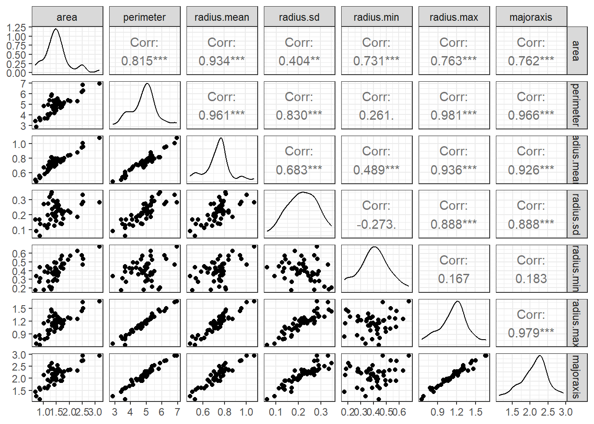
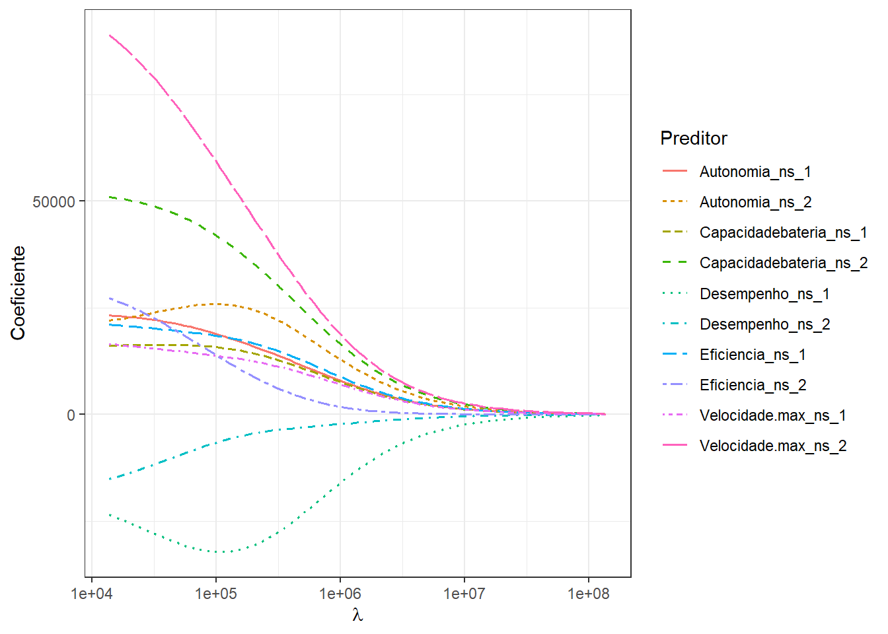
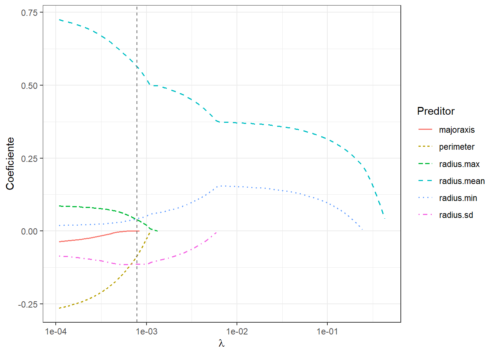
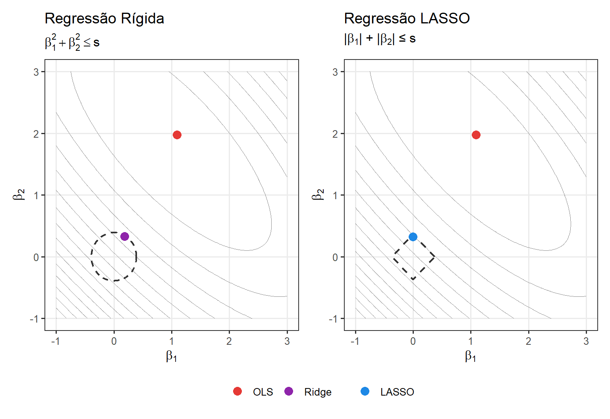

5 Regressão rígida e LASSO
5.1 Regressão rígida
Quando um modelo de regressão linear múltipla apresenta muitos preditores correlacionadas, seus coeficientes podem ser mal estimados, acarretando em alta variância das estimativas. Tais modelos costumam ter seus coeficientes inflados devido à correlação entre os preditores. A regressão rígida tem por finalizadade encolher ou diminuir coeficientes de variáveis correlacionadas, com a finalidade de minimizar a variância do modelo. A regressão rígida, portanto, lida com o problema de multicolineariedade.
Definição
A Multicolineariedade é um problema passível de ocorrência tanto em regressão quanto em classificação quando a correlação entre preditores dificulta a distinção de seus efeitos individuais na resposta de interesse.
A Figura 5.1 expõe gráficos de dispersão aos pares, além dos coeficientes de correlação de Pearson, também aos pares, e densidades amostrais individuais para as variáveis do conjunto de dados de dimensões em folhas de uma jaboticabeira. Observa-se, entre diversos pares de variáveis, correlação positiva alta, \(r \rightarrow 1\). É claro que, ao aumentar a área de uma folha em relação às demais, o perímetro e outras dimensões possivelmente aumentarão.
Para evitar a inflação dos cioeficientes devido à multicolineariedade, a regressão rígida usa uma alteração na função perda otimizada nas via mínimos quadrados. Seja a função perda quadrática descrita anteriormente para mínimos quadrados em regressão múltipla.
\[ \begin{align} L(\mathbf{\beta}) =& \sum_{i=1}^n \varepsilon_i^2 = \sum_{i=1}^n(y_i-\hat{y}_i)^2 =\sum_{i=1}^n(y_i-\beta_0-\sum_{j=1}^k\beta_jx_{ij})^2\\ L(\mathbf{\beta}) =& \mathbf{\varepsilon}^T\mathbf{\varepsilon} = (\mathbf{y} - \mathbf{X}\mathbf{\beta})^T(\mathbf{y} - \mathbf{X}\mathbf{\beta}) \\ =&\mathbf{y}^T\mathbf{y} - 2\mathbf{\beta}^T\mathbf{X}^T\mathbf{y} + \mathbf{\beta}^T\mathbf{X}^T\mathbf{X}\mathbf{\beta} \end{align} \]
Minimizando tal quantidade pela escolha de \(\beta\), conforme visto anteriormente, resulta nas equações normais de mínimos quadrados, \(\hat{\beta}=(\mathbf{X}^T\mathbf{X})^{-1}(\mathbf{X}^T\mathbf{y})\). A função perda quadrática para regressão rígida, tem um termo adicional, \(\lambda\beta^T\beta\) ou em notação escalar, \(\lambda\sum_{j=1}^k \beta_j^2\). Ao somar tal termo na perda quadrática, garante-se que, na otimização e treinamento do modelo, não seja somente minimizada a soma dos quadrados dos erros, mas também a soma dos quadrados dos coeficientes, evitando a inflação destes.O termo \(\lambda\), consiste em uma constante não negativa chamada de penalização de encolhimento (shrinkage penalty), a qual regulariza tal conflito entre minimização do erro e encolhimento dos coeficientes.
Importante
Quando há multicolineariedade, minimizar puramente a função perda quadrática resulta em um modelo com maior variância, portanto, com possibilidade de sobreajuste (overfitting). Logo, a regressão rígida visa obter um modelo menos flexível, diminuindo a variância de previsão, porém aumentando o vício. Busca-se, por conseguinte, um bom custo-benefício entre vício e variância quando há preditores correlacionados. Deve-se selecionar, via validação cruzada, um valor de \(\lambda\) que estabeleça uma melhor relação entre tais medidas de erro.
A função perda quadrática para regressão rígida é exposta na Equação 5.1.
\[ \begin{aligned} L(\mathbf{\beta,\lambda}) = \mathbf{y}^T\mathbf{y} - 2\mathbf{\beta}^T\mathbf{X}^T\mathbf{y} + \mathbf{\beta}^T\mathbf{X}^T\mathbf{X}\mathbf{\beta} + \lambda\beta^T\beta \end{aligned} \tag{5.1}\]
Em notação algébrica a função perda pode ser escrita segundo a Equação 5.2.
\[ \begin{aligned} L(\mathbf{\beta,\lambda}) =\sum_{i=1}^n(y_i-\beta_0-\sum_{j=1}^k\beta_jx_{ij})^2 + \lambda\sum_{j=1}^k\beta_j^2 \end{aligned} \tag{5.2}\]
Se \(\lambda=0\), tem-se a estimativa padrão de mínimos quadrados que, no caso de multicolineariedade, implicaria em um modelo com alta variância. Se \(\lambda \rightarrow \infty\), os coeficientes tenderão a 0, \(\beta_j \rightarrow 0\), \(\forall j\), o que implicaria, por outro lado, em um modelo com alto vício. Tomando a notação matricial e resolvendo para \(\beta\), os coeficientes de mínimos quadrados para regressão rígida são obtidos pela Equação 5.3.
\[ \begin{aligned} \frac{\partial L}{\partial \mathbf{\beta}} = -2\mathbf{X}^T\mathbf{y} + 2\mathbf{X}^T\mathbf{X}\mathbf{\beta} +2\lambda\beta= 0 \\ \hat{\mathbf{\beta}} = (\mathbf{X}^T\mathbf{X}+\lambda\mathbf{I})^{-1}(\mathbf{X}^T\mathbf{y}) \end{aligned} \tag{5.3}\]
Em um modelo de regressão rígida considerando a área como resposta e as demais variáveis como preditores, a Tabela 5.1 apresenta os coeficientes obtidos sem uso de regularização rígida. Observa-se que poucos coeficientes foram estatisticamente significativos, p.value > \(\alpha\) = 0,05.
| term | estimate | std.error | statistic | p.value |
|---|---|---|---|---|
| (Intercept) | 1.50 | 0.02 | 98.66 | 0.00 |
| perimeter | −0.31 | 0.19 | −1.60 | 0.12 |
| radius.mean | 0.78 | 0.28 | 2.77 | 0.01 |
| radius.sd | −0.06 | 0.21 | −0.26 | 0.79 |
| radius.min | 0.02 | 0.08 | 0.25 | 0.80 |
| radius.max | 0.08 | 0.21 | 0.40 | 0.69 |
| majoraxis | −0.07 | 0.20 | −0.33 | 0.75 |
O gráfico da Figura 5.2 expõe as estimativas dos coeficientes em relação à oenalização de encolhimento, \(\lambda\). Observa-se que o aumento desta constante implica no encolhimento dos coeficientes. Deve-se tentar encontrar o valor de \(\lambda\) que forneça uma boa relação entre soma dos quadrados dos erros e encolhimento dos coeficientes.

A Tabela 5.2 expõe os coeficientes obtidos via regressão rígida para a área da folha. A partir de validação cruzada e grid search pode-se selecionar o valor ótimo de \(\lambda\) dado um conjunto de valores candidatos. Para este caso, \(\lambda^* = 1 \times 10^{-9}\).
| term | estimate |
|---|---|
| (Intercept) | 1.50 |
| perimeter | 0.10 |
| radius.mean | 0.17 |
| radius.sd | −0.06 |
| radius.min | 0.18 |
| radius.max | 0.10 |
| majoraxis | 0.04 |
Importante
Os modelos de regressão rígida e LASSO não são passíveis de teste estatístico e avaliação da significância dos coeficientes e preditores. Sugere-se considerar a magnitude dos coeficientes para avaliar a importância dos preditores.
5.2 Regressão via LASSO
Um problema da regressão rígida é que este método não faz seleção de coeficientes ou termos a serem mantidos no modelo. Ou seja, a regressão rígida não reduz o modelo a partir da exclusão de variáveis correlacionadas, apenas encolhe os coeficientes relaiconados, o que implica na manutenção de preditores redundantes no modelo, mesmo que seus coeficientes sejam drasticamente reduzidos.
Uma alternativa à regressão rígida que promove não somente o encolhimento, mas também a seleção de preditores é a regressão pelo operador de seleção e contração mínima absoluta ou Least Absolute Shrinkage and Selection Operator - LASSO. A regressão LASSO muda a penalização da função perda considerando a norma \(L_1\), \(\sum_{j=1}^k|\beta_j|\), em detrimento da norma \(L_2\), \(\sum_{j=1}^k\beta_j^2\), usada no caso rígido.
\[ \begin{aligned} L(\mathbf{\beta,\lambda}) = \sum_{i=1}^n(y_i-\beta_0-\sum_{j=1}^k\beta_jx_{ij})^2 + \lambda\sum_{j=1}^k|\beta_j| \end{aligned} \tag{5.4}\]
No caso da regressão via LASSO, não há solução fechada ou equações normais, como na regressão rígida. Logo, a Equação 5.4 deve ser minimizada via programação quadrática para estimar os coeficientes.
A Figura 5.3 plota as estimativas dos coeficientes para o exemplo anterior em função do parâmetro de encolhimento e de seleção de variáveis, \(\lambda\), na regressão via LASSO. É possível observar que, à medida que \(\lambda\) aumenta, alguns coeficientes são anulados e, portanto, os preditores relacionados são excluídos do modelo. De forma análoga à regressão rígida, na regressão via LASSO deve-se obter o \(\lambda\) ótimo via validação cruzada. Para o exemplo, a penalização de encolhimento ótima é \(\lambda^* = 7,9 \times 10 ^{-4}\), destacada via linha de referência tracejada cinza.

Finalmente, a Tabela 5.3 apresenta os coeficientes obtidos por regressão via LASSO. Observa-se neste caso que apenas uma variável, majoraxis, foi excluída do modelo, dado que seu coeficiente foi anulado.
| term | estimate |
|---|---|
| (Intercept) | 1.50 |
| perimeter | −0.08 |
| radius.mean | 0.56 |
| radius.sd | −0.11 |
| radius.min | 0.04 |
| radius.max | 0.04 |
| majoraxis | 0.00 |
5.3 Formulações alternativas para regressão rígida e LASSO
Uma formulação alternativa para o problema de regressão rígida pode ser expressa na formulação 5.5, onde \(s\) seria um parâmetro associado a \(\lambda\) que limita o crescimento dos coeficientes.
\[ \begin{aligned} Min \Biggl\{\sum_{i=1}^n(y_i-\beta_0-\sum_{j=1}^k\beta_jx_{ij})^2\Biggl\} \\ st.:\sum_{j=1}^k\beta_j^2 \leq s \end{aligned} \tag{5.5}\]
Para o caso da regressão via LASSO a formulação fica conforme a formulação 5.6.
\[ \begin{aligned} Min \Biggl\{\sum_{i=1}^n(y_i-\beta_0-\sum_{j=1}^k\beta_jx_{ij})^2\Biggl\} \\ st.:\sum_{j=1}^k|\beta_j| \leq s \end{aligned} \tag{5.6}\]
A Figura 5.4 ilustra a função perda quadrática sendo minimizada respeitando à restrição rígida ou LASSO, segundo às formulações expostas. Pode-se observar que o valor dos coeficientes de mínimos quadrados são encolhidos quando a restrição de regressão rígida é imposta, enquanto no caso LASSO observa-se não somente o encolhimento, mas a manutenção de apenas o segundo preditor no modelo, uma vez que \(\beta_1\) foi anulado.

5.4 Implementações em R
A seguir serão expostas as implementações necessárias para obter os resultados do capítulo.
5.4.1 Regressão rígida
Carregando as bibliotecas (pacotes) para análise. O pacote yardstick é usado para cálculo de métricas de ajuste dos modelos. Já o pacote tune serve para realizar grid search com validação cruzada para otimizar os hiperparâmetros. O conjunto de dados folhasfrutas é filtrado para a espécie jabuticaba apenas, exclui-se a linha 46, dada a presença de um valor discrepante e, por fim, exclui-se a variável eccentricity.
library(sjdatar)
library(ggplot2)
library(dplyr)
library(tidymodels)
library(GGally)
library(yardstick)
library(tune)
data(folhasfrutas)
dados <- data.frame(folhasfrutas) |>
slice(-46) |>
filter(especie == "jabuticaba") |>
select(-c(especie,eccentricity))O comando ggpairs do pacote GGally é útil para visualizar distribuições individuais, além de correlações aos pares.
ggpairs(dados) +
theme_bw()Separando dados de teste e de treino.
set.seed(36)
dados_split <- initial_split(dados, prop = 0.60)
dados_treino <- training(dados_split)
dados_teste <- testing(dados_split)Definindo a receita, método e workflow. A receita com fórmula area ~ ., implica em um modelo que considera todas as colunas como preditores exceto a resposta, area . O modelo de regressão rígida também é definido via linear_reg, porém com argumento penalty diferente de zero, o qual consiste no parâmetro de regularização \(\lambda\). Recomenda-se fazer penalty = tune(), de forma a otimizá-lo. Se mixture = 0 faz-se regularização rígida. Sugere-se tanto para regressão rígida quanto para LASSO set_engine("glmnet"). Define-se um modelo de regressão linear múltipla sem regularização, para fins de comparação.
receita <- recipe(formula = area ~.,
data = dados_treino) |>
step_normalize(all_numeric_predictors()) |>
step_impute_median(all_numeric_predictors())
lm_model <-
linear_reg(penalty = 0) |>
set_engine("lm")
ridge_model <-
linear_reg(penalty = tune(),
mixture = 0) |>
set_engine("glmnet")
area_workflow <-
workflow() |>
add_recipe(receita) |>
add_model(ridge_model)
area_workflow_ols <-
workflow() |>
add_recipe(receita) |>
add_model(lm_model)Realizando o treinamento do modelo de regressão linear múltipla para fins de comparação.
area_fit_lm <-
area_workflow_ols |>
fit(data = dados_treino)
area_fit_lm |>
extract_fit_parsnip() |>
tidy()Realizando o treinamento do modelo de regressão rígida. Neste caso, sugere-se realizar a validação cruzada via k-dobras com grid search para otimizar \(\lambda\). O comando grid_regular é usado para criar um vetor de valores candidatos para \(\lambda\). O comando vfold_cv é usado para definir o número de partições realizadas nos dados, com o arugmento v. Com tune_grid realiza-se a validação cruzada testando para todas as partições dos dados cada valor candidato de \(\lambda\). Deve-se definir a métrica de erro de teste, além de fornecer o workflow. O comando select_best extrai o melhor valor tentativo para a penalização de encolhimento. Por fim, deve-se novamente chamar o workflow e finalizá-lo com finalize_workflow, fixando a penalização no nível ótimo e estimando o modelo final nos dados de treino com fit.
Nota
O método de validação cruzada por k-dobras e outros são explicados na Seção 7.3.
grid_penalty <- grid_regular(penalty(), levels = 30)
set.seed(42)
cv_folds <- vfold_cv(dados_treino, v = 5)
tune_result <- tune_grid(
area_workflow,
resamples = cv_folds,
grid = grid_penalty,
metrics = metric_set(rmse)
)
# autoplot(tune_result) + theme_bw()
best_penalty <- select_best(tune_result, metric = "rmse")
# best_penalty
area_fit_rid_final <- area_workflow |>
finalize_workflow(best_penalty) |>
fit(data = dados_treino)
area_fit_rid_final |>
extract_fit_parsnip() |>
tidy()Previsão e métricas nos dados de teste para o modelo obtido via mínimos quadrados ordinários para fins de comparação.
pred_lm <- bind_cols(
predict(area_fit_lm, dados_teste),
dados_teste
)
metricas <- pred_lm |>
metrics(truth = area, estimate = .pred)
metricasPrevisão e métricas nos dados de teste do modelo de regressão rígida.
pred_rig <- bind_cols(
predict(area_fit_rid_final, dados_teste),
dados_teste
)
metricas <- pred_rig |>
metrics(truth = area, estimate = .pred)
metricas5.4.2 Regressão via LASSO
Para a regularização via LASSO deve-se considerar no modelo mixture = 1.
lasso_model <-
linear_reg(penalty = tune(),
mixture = 1) |>
set_engine("glmnet")
area_workflow2 <-
workflow() |>
add_recipe(receita) |>
add_model(lasso_model)Otimização de \(\lambda\) via validação cruzada.
tune_result2 <- tune_grid(
area_workflow2,
resamples = cv_folds,
grid = grid_penalty,
metrics = metric_set(rmse)
)
# autoplot(tune_result) + theme_bw()
best_penalty2 <- select_best(tune_result2, metric = "rmse")
# best_penalty2
area_fit_lasso_final <- area_workflow2 |>
finalize_workflow(best_penalty2) |>
fit(data = dados_treino)
area_fit_lasso_final |>
extract_fit_parsnip() |>
tidy()Previsão com dados de teste e ajuste. Observa-se melhores resultados do modelo de regressão via LASSO em comparação à regressão rígida e à regressão via mínimos quadrados.
pred_lasso <- bind_cols(
predict(area_fit_lasso_final, dados_teste),
dados_teste
)
metricas <- pred_lasso |>
metrics(truth = area, estimate = .pred)
metricasReferências
Hastie, T., Tibshirani, R., Friedman, J. H., & Friedman, J. H. (2009). The elements of statistical learning: data mining, inference, and prediction (Vol. 2, pp. 1-758). New York: springer.
Gareth, J., Daniela, W., Trevor, H., & Robert, T. (2013). An introduction to statistical learning: with applications in R. Spinger.
5.5 Exercícios
Porque a regularização via LASSO é às vezes mais interessante que a regressão rígida?
Retome o problema de previsão de preços de carros do modelo honda Fit, do conjunto de dados
carrosusados2025webmotors, considerando como preditores a quilometragem e o ano. Obtenha modelos de regressão rígida e LASSO, de forma a tratar a multicolineariedade entre estes preditores. Faça também um modelo de regressão linear múltipla para fins de comparação. Qual modelo apresenta melhores resultados para os dados de teste? Qual o \(lambda\) ótimo para cada método? Este modelo supera o modelo de regressão linear múltipla obtido via mínimos quadrados?
library(sjdatar)
data(carrosusados2025webmotors)
dados <- carrosusados2025webmotors |>
filter(Carro == "FIT") |>
select(Preco, Ano, Km)- Ainda considernado o conjunto de dados
carrosusados2025webmotors, obtenha um modelo de regressão rígida considerando os dados completos. Compare este modelo com o obtido no Exercício 6 da Seção 2.5. Sugestão remover a coluna Combustivel, conforme segue.
data(carrosusados2025webmotors)
dados <- carrosusados2025webmotors |>
select(-Combustivel)- Refaça o exercício anterior, porém considerando regularização via LASSO. Qual modelo apresentou desempenho de teste superior?